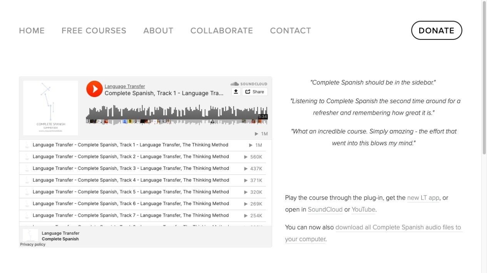
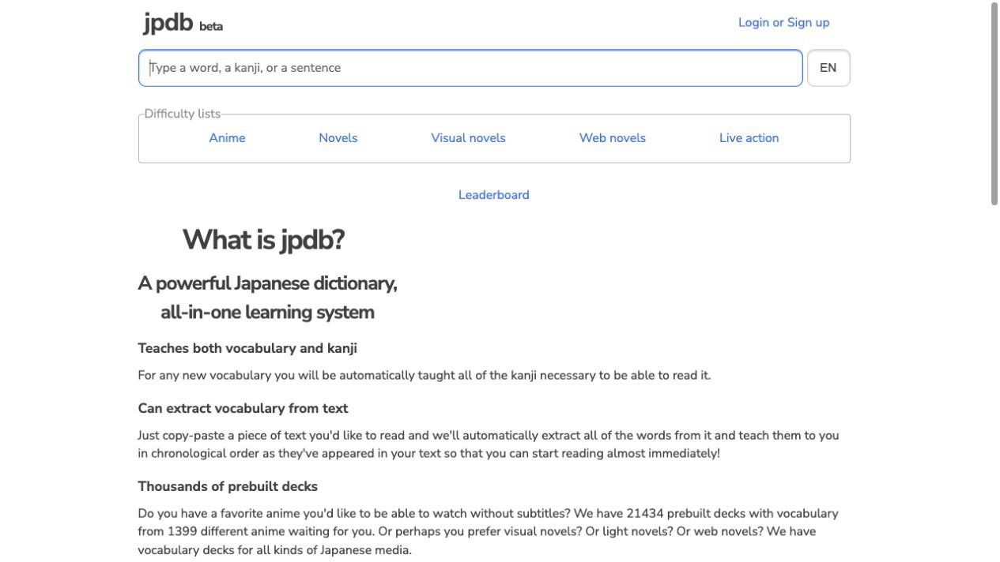

Language Transfer Spanish Too Fast? A Slower Beginner Routine
A slower way to approach Language Transfer: pause before answers, identify the step that confuses you, and leave room for Spanish beyond the explanations.
Browse every note, newest first, or choose a language folder.

A slower way to approach Language Transfer: pause before answers, identify the step that confuses you, and leave room for Spanish beyond the explanations.

Choose around your next learning task: speaking aloud, understanding sentence patterns, or building a routine. Here is what official descriptions and learner discussions reveal.

Choosing between media vocabulary decks and custom flashcards? Compare the workflows, learner tradeoffs, and migration questions before changing your Japanese reviews.

Looking for the best Korean textbooks for self-study? The right book should be easy to follow without a teacher, with clear explanations, audio, exercises, and a structured learning path. A book can be excellent in a university classroom and still feel frustrating at home. You may have no teacher to explain missing grammar, check exercises,…
This post contains affiliate links. If you sign up through my links, I may earn a small commission at no extra cost to you — and it helps keep this blog running. Thanks for your support! So you’ve been watching anime without subtitles and thinking, “I should really be learning something here.” Whether you’re a…

Affiliate disclosure: This article contains affiliate links. If you sign up through my link, I may earn a commission at no extra cost to you. Key Takeaways I tried Lingopie specifically for Japanese to see how useful that idea is in practice. This review covers the catalog, the learning tools, and whether the experience actually…
I like learning Japanese vocabulary and expressions in context, especially through news, magazines, interviews, and other real content. Seeing the same words used naturally makes them much easier for me to remember than studying them on their own. I have tried learner magazines, youth newspapers, lifestyle magazines, and native news publications. Some matched my level…
Some links in this article are affiliate links. I may earn a commission at no extra cost to you. Watching Korean dramas and variety shows is one of the easiest ways to bring more Korean into your daily routine. But the platform you choose can change how useful that watching time actually is. Some streaming…

Affiliate disclosure: This post contains affiliate links to some tools mentioned (such as LingQ and ElevenLabs). I may earn a commission at no extra cost to you. Renshuu did not sponsor this review and I was not compensated by them in any way. All opinions are my own. I started this Renshuu review expecting another…
Key Takeaways When I first started learning Korean, I thought reading would become fast as soon as I memorized Hangul. It didn’t. I could pronounce every syllable, but I was still reading so slowly that Korean subtitles disappeared before I finished them. Long sentences were even worse: by the time I reached the end, I…